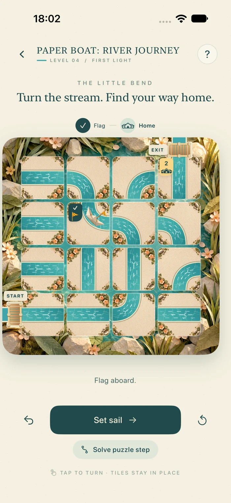
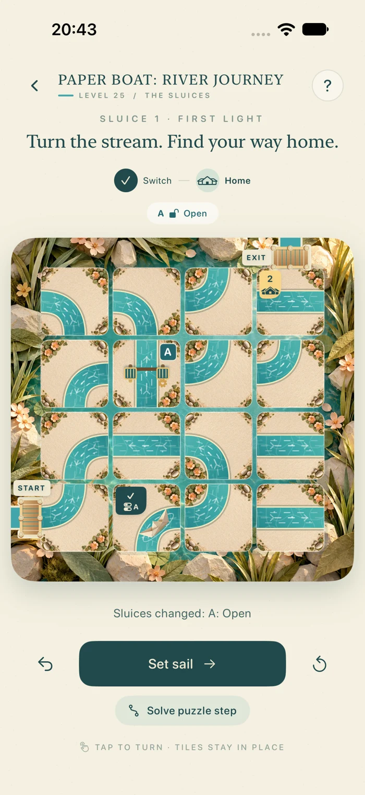

A little puzzle. A lovely journey.
Paper Boat:
River Journey
Turn the stream.
Find your way home.
A gentle waterway puzzle for iPhone. Turn the tiles, connect the current, and guide a little paper boat from bridge to bridge.
48 journeys · 6 chapters · Made for iPhone
One turn at a time
Find a little flow.
Begin with a simple delivery, then unlock each journey in order. Across six chapters, new stops, changing waterways, and switch-controlled sluices give you a little more to think about.
Turn the stream
Tap a waterway tile to rotate it by 90°. Tiles stay in place; you shape the route.
Send your boat sailing
Connect the water to the next numbered stop, then set sail. Collect parcels and a flag, and watch them travel aboard.
Pause. Plan. Carry on.
Your boat waits at each stop while you arrange the next stretch. Visit the stops in order, then return to the home bridge.
Undo a turn, reset a puzzle, or use a step hint when you need a fresh perspective.

24 new journeys · 3 new chapters
Open a new way forward.
A little switch can change the whole river. Reach a lettered stop to open its matching sluice and make room for your boat.
Follow the letters
Match switch A to sluice A. Watch the gates slide open, then reshape the stream toward your next stop.
Think one stop ahead
Later switches can close an earlier gate while opening another. Plan around up to three sluices, parcels, flags, and changing tiles.
Keep a way home
Every level has a verified solution. Undo restores the gates as well as your last move, and step hints account for which sluices are open.
Explore The Sluices, Changing Waters, and Evening on the River after completing the first three chapters.

A river with a few surprises
Gentle doesn’t mean predictable.
A changing current
Stone islands, waves that turn waterways, fixed tiles, and animated sluices make each new chapter a different kind of puzzle.
Your journey travels with you
Completed levels, best move counts, and hint credits sync through iCloud on devices using the same iCloud account. Keep playing offline; changes merge when you reconnect.
A moment of calm
Paper-crafted scenery, flowing turquoise water, a softly rocking boat, and a quiet soundscape bring the river to life.
A little help along the way
Choose to watch a rewarded ad for a hint credit. The one-time ad-free purchase removes all ads and includes unlimited step hints.
Here to help you along.
How saved progress, iCloud sync, purchases, and advertising work, and the choices you have.
SupportHelp with sluices, iCloud sync, hint credits, purchases, and the occasional wrong turn.
Made by Christoph Weidinger. Say hello at christoph.weidinger.work@gmail.com.